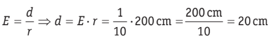

En tecnología, una escala se utiliza para representar objetos o diseños en un tamaño más pequeño o más grande que el original. Las escalas son herramientas importantes para los diseñadores y los ingenieros, ya que les permiten trabajar con modelos y planos que no necesariamente tienen que ser del mismo tamaño que el objeto real.
Lectura facilitada
En tecnología, la escala se usa para mostrar objetos o diseños en un tamaño diferente al original, ya sea más pequeño o más grande.
Esto es útil para diseñadores e ingenieros, ya que les permite trabajar con modelos y planos que no necesariamente son del mismo tamaño que el objeto real.
2. Descubriendo
La escala es la relación que existe entre las dimensiones del dibujo y las dimensiones reales de dicho objeto.
A la hora de trabajar con escalas podemos encontrar tres tipos de escalas diferentes:
1. Escala de reducción:
La escala de reducción se utiliza cuando deseamos representar un objeto o un diseño en un tamaño más pequeño que su tamaño real.
Ejemplo: Si estamos diseñando un plano de una habitación y usamos una escala de 1:50, esto significa que cada centímetro en el plano representa 50 centímetros en la realidad. En otras palabras, estamos reduciendo el tamaño real del espacio en 50 veces para que quepa en nuestro dibujo.
Uso común: La escala de reducción se emplea para representar edificios, planos arquitectónicos, maquetas, mapas, entre otros
2. Escala de ampliación:
La escala de ampliación se utiliza cuando deseamos representar un objeto o un diseño en un tamaño más grande que su tamaño real.
Ejemplo: Supongamos que estamos diseñando un circuito eléctrico y utilizamos una escala de 2:1. Esto significa que cada centímetro en nuestro dibujo representa 2 centímetros en el circuito real. Estamos ampliando el tamaño del circuito en el dibujo para ver los detalles con más claridad.
Uso común: La escala de ampliación es útil para representar componentes electrónicos, detalles minuciosos en diseños mecánicos, circuitos impresos, etc.
3. Escala natural (1:1):
La escala natural, también conocida como escala 1:1, se utiliza cuando el objeto o diseño se representa a su tamaño real.
Ejemplo: En algunos casos, es esencial representar objetos o detalles exactamente como son en la realidad. Por ejemplo, al diseñar una llave inglesa o una pieza de repuesto que debe encajar perfectamente con el objeto real, se utiliza una escala natural (1:1) para que no haya ninguna distorsión de tamaño.
Uso común: La escala natural se emplea en situaciones en las que la precisión en las dimensiones es crítica, como en la fabricación de piezas y componentes.
Lectura facilitada
A la hora de trabajar con escalas podemos encontrar tres tipos de escalas diferentes:
1. Escala de reducción:
La escala de reducción se utiliza cuando deseamos representar un objeto o un diseño en un tamaño más pequeño que su tamaño real.
Ejemplo: Si estamos diseñando un plano de una habitación y usamos una escala de 1:50, esto significa que cada centímetro en el plano representa 50 centímetros en la realidad. En otras palabras, estamos reduciendo el tamaño real del espacio en 50 veces para que quepa en nuestro dibujo.
Uso común: La escala de reducción se emplea para representar edificios, planos arquitectónicos, maquetas, mapas, entre otros
2. Escala de ampliación:
La escala de ampliación se utiliza cuando deseamos representar un objeto o un diseño en un tamaño más grande que su tamaño real.
Ejemplo: Supongamos que estamos diseñando un circuito eléctrico y utilizamos una escala de 2:1.
Esto significa que cada centímetro en nuestro dibujo representa 2 centímetros en el circuito real.
Estamos ampliando el tamaño del circuito en el dibujo para ver los detalles con más claridad.
Uso común: La escala de ampliación es útil para representar componentes electrónicos, detalles minuciosos en diseños mecánicos, circuitos impresos, etc.
3. Escala natural (1:1):
La escala natural, también conocida como escala 1:1, se utiliza cuando el objeto o diseño se representa a su tamaño real.
Ejemplo: En algunos casos, es esencial representar objetos o detalles exactamente como son en la realidad. Por ejemplo, al diseñar una llave inglesa o una pieza de repuesto que debe encajar perfectamente con el objeto real, se utiliza una escala natural (1:1) para que no haya ninguna distorsión de tamaño.
Uso común: La escala natural se emplea en situaciones en las que la precisión en las dimensiones es crítica, como en la fabricación de piezas y componentes.
3. En vídeo
4. ¡Vamos con un ejemplo!
Por ejemplo, si queremos dibujar un armario que mide 2 metros de alto en un papel, evidentemente nos vemos obligados a reducir sus dimensiones.
Le aplicaremos, por ejemplo, una escala de reducción
(Esto también puede expresarse así: 1:10 o 1/10.)Lo que hace la escala que aplicamos es dividir entre 10 la medida real del armario. Por tanto, la altura del armario de 2 m = 200 cm, dividida entre 10, será de 20 cm, que es un tamaño más razonable para dibujar en un papel.
Esto también lo podemos hacer despejando la fórmula. En este caso conocemos la escala y la medida del armario en la realidad, así que sólo tenemos que despejar la medida del dibujo:

También se nos puede plantear un problema como el siguiente: si el armario mide 2 m de alto y está dibujado en un papel con una longitud de 20 cm, 쯤ué escala hemos aplicado?
En este caso sólo tendremos que aplicar la fórmula:
Actividad
Llega el momento de poner en práctica lo aprendido. Formad grupos de cuatro, de manera que unos grupos trabajarán la escala de reducción mientras que otros la escala de ampliación.
Una vez hayáis aprendido a manejaros con las escalas volved a vuestro grupo de origen para:
Explicar cómo funciona vuestra escala realizando con ellos los ejercicios que habéis hecho anteriormente.
Aprender el funcionamiento de la otra escala realizando los ejercicios propuestos.
Lectura facilitada
Ahora vamos a aplicar lo que hemos aprendido. Formaremos grupos de cuatro personas, algunos trabajarán en la escala de reducción y otros en la escala de ampliación.
Luego, regresaremos a nuestros grupos originales y:
Explicaremos cómo funciona nuestra escala y realizaremos ejercicios juntos, como los que ya hemos practicado. Aprenderemos cómo funciona la otra escala haciendo los ejercicios propuestos.
Ejercicios escala ampliación
Ejercicio 1
Un dibujo a escala representa un modelo de automóvil a una escala de 1:20. Si la longitud real del automóvil es de 3 metros, 쯖uál es la longitud del automóvil en el dibujo?
Ejercicio 2
Una maqueta de una casa se ha realizado a una escala de 1:50. Si la altura real de la casa es de 5 metros, 쯖uál es la altura de la maqueta en centímetros?
Ejercicio 3
En un plano de un circuito eléctrico, se utiliza una escala de 1:2. Si la distancia real entre dos componentes es de 8 centímetros, 쯖uál es la distancia entre esos mismos componentes en el plano?
Ejercicio 4
Se ha diseñado un jardín a una escala de 1:100. Si la anchura real de un camino es de 2.5 metros, 쯖uál es la anchura del camino en el dibujo?
Profundiza
Ejercicio 5
Una maqueta de un avión se ha realizado a una escala de 1:200. Si la envergadura real del avión es de 40 metros, 쯖uál es la envergadura de la maqueta en centímetros?
Ejercicio 6
Una maqueta de un avión se ha realizado a una escala de 1:200. Si la envergadura real del avión es de 40 metros, 쯖uál es la envergadura de la maqueta en centímetros?
Ejercicio 7
Una prenda de ropa se ha diseñado a una escala de 1:12. Si la longitud real de la manga es de 72 centímetros, 쯖uál es la longitud de la manga en el diseño?
Ejercicio 8
Una prenda de ropa se ha diseñado a una escala de 1:12. Si la longitud real de la manga es de 72 centímetros, 쯖uál es la longitud de la manga en el diseño?
Ejercicios escala reducción
Ejercicio 1
Un plano de una casa se ha realizado a una escala de reducción de 1:50. Si la longitud en el plano es de 4 centímetros, 쯖uál es la longitud real de la casa?
Ejercicio 2
Se ha dibujado un mapa de una ciudad a una escala de 1:10,000. Si la distancia entre dos puntos en el mapa es de 5 centímetros, 쯖uál es la distancia real entre esos dos puntos en la ciudad?
Ejercicio 3
Un circuito eléctrico se representa en un plano a una escala de 1:5. Si la distancia entre dos componentes en el plano es de 2 centímetros, 쯖uál es la distancia real entre esos componentes?
Ejercicio 4
Una maqueta de un avión se ha realizado a una escala de reducción de 1:20. Si la envergadura en la maqueta es de 15 centímetros, 쯖uál es la envergadura real del avión?
Profundiza
Ejercicio 5
Un mapa topográfico de una montaña se ha hecho a una escala de 1:25,000. Si la altura de la montaña en el mapa es de 8 centímetros, 쯖uál es la altura real de la montaña?
Ejercicio 6
Un diseño de una prenda de ropa se ha realizado a una escala de 1:4. Si la longitud de la falda en el diseño es de 5 centímetros, 쯖uál es la longitud real de la falda?
Ejercicio 7
Un plano de una planta de una fábrica se ha dibujado a una escala de 1:100. Si la distancia entre dos áreas en el plano es de 3 centímetros, 쯖uál es la distancia real entre esas áreas en la fábrica?
Ejercicio 8
Un dibujo de un edificio a escala de reducción muestra una altura de 6 centímetros. Si la escala es 1:500, 쯖uál es la altura real del edificio?
Motus dice 쯈ué es lo que más te ha gustado de la interacción con tus compañeros?
쯊e ha llamado la atención alguna pregunta planteada por alguno de ellos? 쯉e lo has dicho? ¡A todos y todas nos gusta saber lo que hacemos bien!
 En tecnología, una escala se utiliza para representar objetos o diseños en un tamaño más pequeño o más grande que el original. Las escalas son herramientas importantes para los diseñadores y los ingenieros, ya que les permiten trabajar con modelos y planos que no necesariamente tienen que ser del mismo tamaño que el objeto real.
En tecnología, una escala se utiliza para representar objetos o diseños en un tamaño más pequeño o más grande que el original. Las escalas son herramientas importantes para los diseñadores y los ingenieros, ya que les permiten trabajar con modelos y planos que no necesariamente tienen que ser del mismo tamaño que el objeto real.